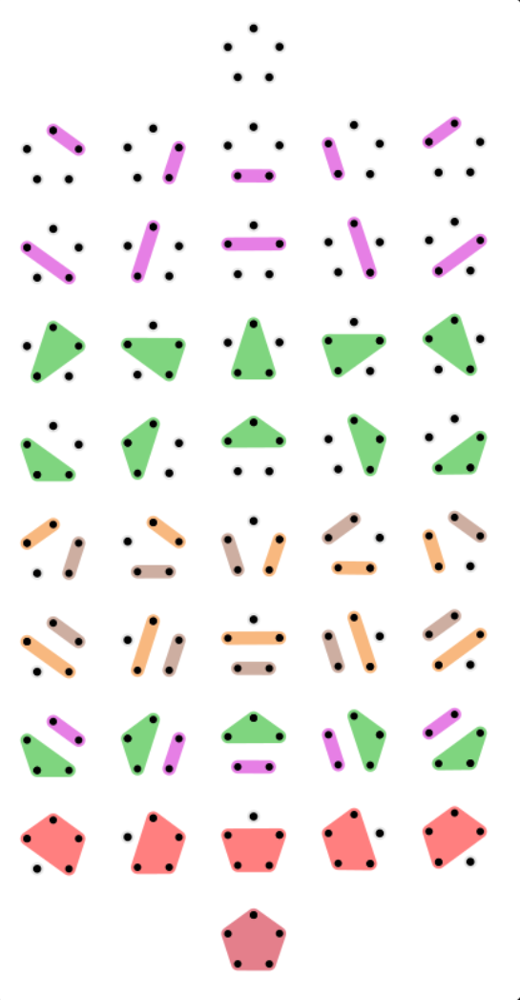
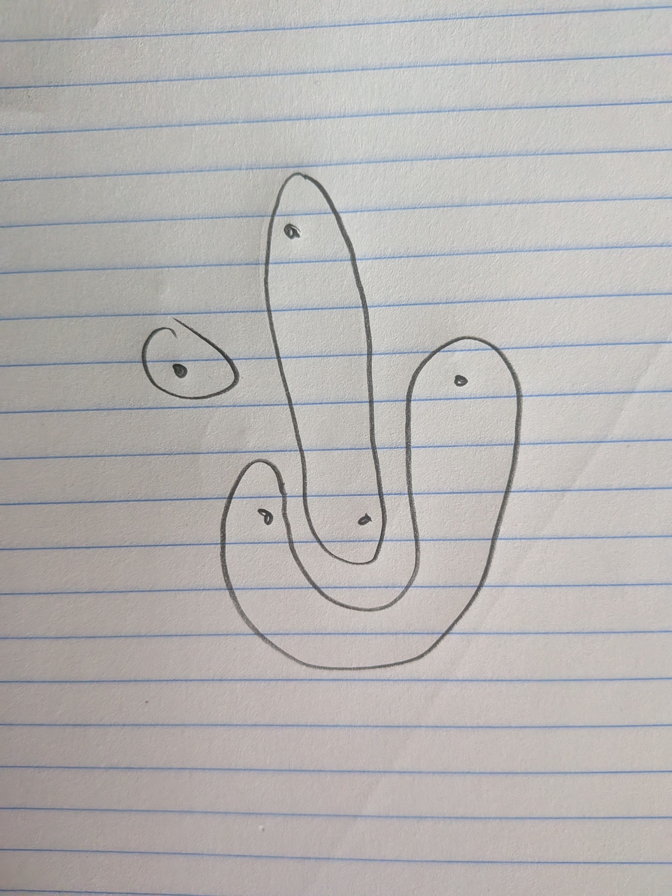

A common definition of the nth catalan number is "the number of non overlapping partitions of a graph of circularly arranged vertices". If we restrict ourselve to partitions of "subsets contained by convex boundaries", this is the meaning of the nth catalan number.
The following counter example shows the problem with non convex boundaries.
